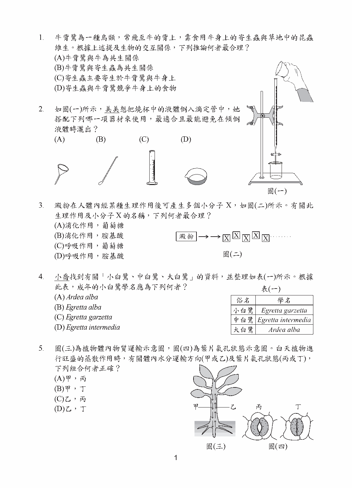
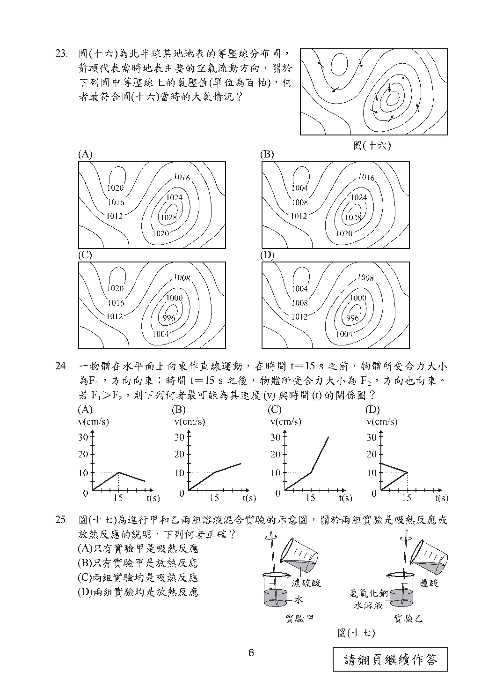
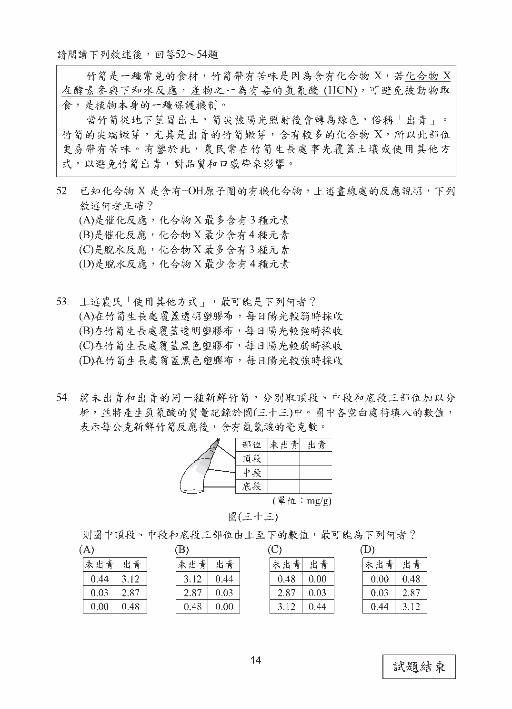

第 2 題對應：八上1-1
如圖(一)所示，美美想把燒杯中的液體倒入滴定管中，她搭配下列哪一項器材來使用，最適合且最能避免在傾倒液體時灑出？

此題選項為圖形，請參閱下方官方題本頁面圖片作答。
正解 (A) 將液體倒入管口細小的容器(如滴定管)時，應搭配漏斗承接，使液體能集中沿管口流入而不致外濺灑出；玻璃棒引流雖也可導流，但對管口極細的滴定管而言，漏斗最為適合。
第 12 題對應：九上3-1
圖(十)為輪軸裝置的正視圖及側視圖，若要使用此裝置「省力地」將重物等速向上抬起，下列何種使用方式最適當？
此題選項為圖形，請參閱下方官方題本頁面圖片作答。
正解 (D) 輪軸是槓桿原理的應用：施力臂(輪的半徑)越長，就越省力。要省力就必須在「半徑較大的輪」上施力，並將重物懸掛於「半徑較小的軸」上，如此施力可小於重物重量；反之則會費力。
第 18 題對應：生物1-2
某生使用放大倍率為40倍的解剖顯微鏡觀察某一圖形，視野下如圖(十三)所示。在不轉動圖形的情況下，若改以目鏡10X、物鏡4X的複式顯微鏡觀察，下列何者最可能是在該倍率的複式顯微鏡視野下觀察到的圖形？
此題選項為圖形，請參閱下方官方題本頁面圖片作答。
正解 (D) 解剖顯微鏡成正立的像，複式顯微鏡則成上下、左右皆顛倒的倒立像(相當於將原圖旋轉180度)。兩者放大倍率同為40倍(10X×4X＝40X)，故大小不變，只需將解剖顯微鏡下所見的圖形旋轉180度即為答案。
第 21 題對應：九下3-3
某次颱風通過一小島後，阿龍檢視了該小島在受颱風影響時的地面天氣觀測資料，由某個觀測值正確推得颱風中心最接近該小島的時間點為該月的7日12時。根據颱風中心的性質，下列何者最可能是他作出推論所利用的資料？
此題選項為圖形，請參閱下方官方題本頁面圖片作答。
正解 (C) 颱風是強烈的低氣壓系統，中心氣壓最低。當颱風中心最接近測站時，該站測得的氣壓會降到最低值，故應選出「氣壓隨時間變化」且在7日12時出現最低點的資料圖。
第 23 題對應：九下3-1
圖(十六)為北半球某地地表的等壓線分布圖，箭頭代表當時地表主要的空氣流動方向，關於下列圖中等壓線上的氣壓值(單位為百帕)，何者最符合圖(十六)當時的大氣情況？

此題選項為圖形，請參閱下方官方題本頁面圖片作答。
正解 (C) 地表空氣一定是由高氣壓區流向低氣壓區，且在北半球會因地球自轉的偏向效應而向右偏。需依圖(十六)中箭頭所指的流動方向，判斷哪一組等壓線數值的高低分布(氣壓由何側往何側遞減)與該氣流方向相符。
第 24 題對應：九上2-2
一物體在水平面上向東作直線運動，在時間t＝15s之前，物體所受合力大小為F1，方向向東；時間t＝15s之後，物體所受合力大小為F2，方向也向東。若F1＞F2，則下列何者最可能為其速度(v)與時間(t)的關係圖？
此題選項為圖形，請參閱下方官方題本頁面圖片作答。
正解 (B) 依F＝ma，合力方向與運動方向相同(皆向東)代表物體持續加速，故速度全程遞增；而v-t圖的斜率即為加速度，合力愈大斜率愈陡。因F1＞F2，圖形應為前15秒斜率較陡、15秒後斜率變緩，但仍持續上升的折線。
第 36 題對應：九上6-1
老師在課堂上以一張海報來讓學生分組上臺說明某一類型板塊交界的各項特徵，如圖(二十三)所示。圖(二十四)為老師提供學生使用的貼紙，並告訴學生這些貼紙上的箭頭或文字的用途，是用來說明兩板塊相對運動方向與海洋地殼年齡的關係，若要正確呈現這類型板塊交界的特徵，下列哪一種黏貼方式最為合理？
此題選項為圖形，請參閱下方官方題本頁面圖片作答。
正解 (D) 中洋脊為板塊張裂型交界，兩側板塊互相「分離」(箭頭應朝相反方向背離中洋脊)，且新的海洋地殼在中洋脊處不斷生成，故離中洋脊愈近的地殼年齡愈年輕、愈遠者愈老。需選出同時符合這兩項特徵的黏貼方式。
第 54 題對應：生物2-2
將未出青和出青的同一種新鮮竹筍，分別取頂段、中段和底段三部位加以分析，並將產生氫氰酸的質量記錄於圖(三十三)中。圖中各空白處待填入的數值，表示每公克新鮮竹筍反應後，含有氫氰酸的毫克數。則圖中頂段、中段和底段三部位由上至下的數值，最可能為下列何者？

此題選項為圖形，請參閱下方官方題本頁面圖片作答。
正解 (A) 依本文敘述，竹筍的尖端嫩芽含化合物X最多(愈往下含量愈少)，而出青者又比未出青者含量更多。氫氰酸由化合物X反應產生，故數值應呈現：同一支筍由頂段往底段遞減，且出青竹筍的各段數值皆高於未出青者，需選出符合此雙重趨勢的數值組合。